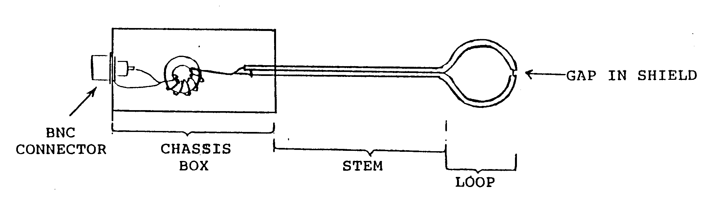

Dear Professor Shapiro,
A PICKUP LOOP WHICH IS SENSITIVE ONLY TO RF MAGNETIC T;IELD
The popularization of NMR of large samples in a large magnet bore space has increased the need for a convenient measurement of the magnitude and direction of the rf magnetic field generated by a coil. This is true, for example, in constructing birdcage coils to see if the correct oscillation mode is being generated. The measurement of the rf magnetic field is best performed by the use of a loop of wire in which a current proportional to the rate of change of the magnetic field is induced. For a sinusoidally varying magnetic field, the induced current is proportional to the magnetic field intensity (with a phase shift). The major problem with measuring the rf magnetic field with a loop of wire is the sensitivity of the loop to the local rf electric field. In particular, the electric field which is generated by the current in the coil must be accounted for. A crude way to do this is to make two measurements, one with the loop and another with the loop shorted, and subtract the results.
We have been using a variation of the loop which automatically cancels the electric field signal(l) and report its construction here because it seems not to be well known in the NMR community.
Design
The figure shows a diagram of the loop and its accompanying circuit. We used RG-174/U coaxial cable with a #26 stranded center conductor for the loop and stem. The plastic jacket is stripped off so that we can minimize the contribution to the total probe area that the stem makes.
The loop is made by wrapping the cable around a 7/8 in. outside diameter slice of a plexiglass tube as a form. A gap is made in the shield to let the inner conductor "see" the rf field. It is important to have the stem long enough to be able to keep the chassis box out of the field generated by the coil that's being measured in order that the loop assembly not detune the coil, ideally. the stem contributes no area to the total loop area. We soldered most of the stern and then used shrink tubing to minimize the area along the stem length. We could have also twisted the two wires in the stem to cancel the net flux passing between them.
The loop is sensitive to both electric and magnetic fields, but we are interested only in the magnetic field response. A balun is used to remove the signal caused by the changing electric field. Following Roleson(l), we used #24 enameled wire bifilar wound seven times around a small ferrite core.
Use
The shielded loop antenna is simple to use. Drive the coil to be tested with a cw or pulse signal at the frequency of interest. Attach the shielded loop antenna to a high impedance input of an oscilloscope and make measurements of the relative field strength and direction by comparing the magnitudes of the rf that is being detected by the probe. With our particular birdcage coil, we see 20 volts peak-to- peak into the scope for an effective B field of 0.175 gauss which gives rise to a proton p /2 pulse of about 350m s. With this high sensitivity, it is easy to test a coil which is excited by a weak cw source. This is convenient for us because the high power transmitter of the NMR apparatus is often not available when the coil is being developed. A loop to be used with high power pulses can be smaller and thus have better spatial resolution.
One test of how well this loop works for measuring the rf magnetic field is to rotate it in the rf coil to be tested. A maximum in the magnitude of the rf detected corresponds to an orientation with the plane of the probe cutting the most field lines, whereas a minimum corresponds to an orientation with the loop cutting no field lines. If the loop-coil system is working well, this minimum will be a zero, but if the electric field is not cancelled fully, there will be a residual signal at minimum.
1. Scott Roleson, "Evaluate EMI Reduction Schemes With Shielded-Loop Antennas, EDN, 203-207; May 17, 1984.

Sincerely,
Joel C. Watkins and Eiichi Fukushima